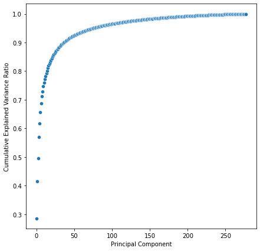

Inferring the number of components#
Load modules#
[6]:
from robustica import InferComponents
import pandas as pd
import numpy as np
from sklearn.decomposition import PCA
import matplotlib.pyplot as plt
import seaborn as sns
Load data from Sastry (2019)#
[3]:
url = "https://static-content.springer.com/esm/art%3A10.1038%2Fs41467-019-13483-w/MediaObjects/41467_2019_13483_MOESM4_ESM.xlsx"
data = pd.ExcelFile(url)
data.sheet_names
[3]:
['README',
'Metadata',
'Expression Data',
'S matrix',
'A matrix',
'Media Recipes',
'Gene Information']
[4]:
data.parse("README")
[4]:
| Sheet Name | Description | |
|---|---|---|
| 0 | Experimental Conditions | Experimental conditions for each sample in PRE... |
| 1 | Expression Data | Expression levels of genes (log2 Transcripts p... |
| 2 | S matrix | I-modulon gene coefficients. Each column is an... |
| 3 | A matrix | Condition-specific i-modulon activities. Each ... |
| 4 | Media Description | Recipes for base media and trace element mixtures |
| 5 | Gene Information | Mapping of b-numbers to gene names/annotations... |
| 6 | NaN | NaN |
| 7 | Metadata Columns | Description |
| 8 | Sample ID | Unique sample identifier for experiment (e.g. ... |
| 9 | Study | Short 1-2 word description of study where samp... |
| 10 | Project ID | Identifier for study |
| 11 | Condition ID | Identifier for unique experimental conditions |
| 12 | Replicate # | Suffix for sample ID to distinguish between re... |
| 13 | Strain Description | Describes gene knock-out, mutation knock-in, o... |
| 14 | Strain | MG1655 or BW25113 |
| 15 | Base Media | Media recipe as described in Media Description... |
| 16 | Carbon Source (g/L) | Carbon source in g/L |
| 17 | Nitrogen Source (g/L) | Nitrogen source in g/L |
| 18 | Electron Acceptor | Aerobic (O2), anaerobic (None), or nitrate (KN... |
| 19 | Trace Element Mixture | Trace element recipe as described in Media Des... |
| 20 | Supplement | Additional media supplements in each experimen... |
| 21 | Temperature (C) | Temperature of growth condition in Celsius |
| 22 | pH | Neutral (7) or acidic (5.5) |
| 23 | Antibiotic | Treatment with low concentration Kanamycin for... |
| 24 | Culture Type | Batch or Chemostat (always exponential growth ... |
| 25 | Growth Rate (1/hr) | Measured growth rate of strain in media |
| 26 | Evolved Sample | Whether the strain was from an adaptive labora... |
| 27 | Isolate Type | Clonal or Population (only applicable to ALE s... |
| 28 | Sequencing Machine | Type of machine used for sequencing |
| 29 | Additional Details | Additional information about experiment |
| 30 | Biological Replicates | Number of biological replicates within study |
| 31 | Alignment | Percent of reads aligned by bowtie to referenc... |
| 32 | DOI | Accession number for study |
| 33 | GEO | GEO Accession ID |
Preprocess data#
Following the article’s methods, we compute the log2FCs with respect to controls
[5]:
# get gene expression
X = data.parse("Expression Data").set_index("log-TPM")
# get controls
controls = [c for c in X.columns if "control" in c]
print(controls)
# compute log2FCs with respect to controls
X = X - X[controls].mean(1).values.reshape(-1, 1)
X
['control__wt_glc__1', 'control__wt_glc__2']
[5]:
| control__wt_glc__1 | control__wt_glc__2 | fur__wt_dpd__1 | fur__wt_dpd__2 | fur__wt_fe__1 | fur__wt_fe__2 | fur__delfur_dpd__1 | fur__delfur_dpd__2 | fur__delfur_fe2__1 | fur__delfur_fe2__2 | acid__wt_ph5__1 | acid__wt_ph5__2 | acid__delgadx_ph5__1 | acid__delgadx_ph5__2 | acid__delgadw_ph5__1 | acid__delgadw_ph5__2 | acid__delgade_ph5__1 | acid__delgade_ph5__2 | oxidative__wt_pq__1 | oxidative__wt_pq__2 | oxidative__deloxyr_pq__1 | oxidative__deloxyr_pq__2 | oxidative__delsoxr_pq__1 | oxidative__delsoxr_pq__2 | oxidative__delsoxs_pq__1 | oxidative__delsoxs_pq__2 | nac_ntrc__wt_csn__1 | nac_ntrc__wt_csn__2 | nac_ntrc__wt_cytd__1 | nac_ntrc__wt_cytd__2 | nac_ntrc__wt_gln__1 | nac_ntrc__wt_gln__2 | nac_ntrc__bw_delnac_csn__1 | nac_ntrc__bw_delnac_csn__2 | nac_ntrc__bw_delnac_cytd__1 | nac_ntrc__bw_delnac_cytd__2 | nac_ntrc__bw_delnac_gln__1 | nac_ntrc__bw_delnac_gln__2 | nac_ntrc__bw_delnac_nh4__1 | nac_ntrc__bw_delnac_nh4__2 | ... | fps__fps_ptsI_ale3__1 | fps__fps_ptsI_ale3__2 | pal__lyx_ale2_f6__1 | pal__lyx_ale2__1 | pal__lyx_ale2__2 | pal__lyx_ale4__1 | pal__lyx_ale4__2 | pal__5drib_ale10_f18__1 | pal__5drib_ale10_f18__2 | pal__5drib_ale10__1 | pal__arab_ale14_f9__1 | pal__arab_ale14_f9__2 | pal__arab_ale14__1 | pal__arab_ale14__2 | pal__arab_ale16__1 | pal__arab_ale16__2 | pal__tartr_ale26_f10__1 | pal__tartr_ale26_f10__2 | pal__tartr_ale26__1 | pal__tartr_ale26__2 | pal__tartr_ale28_f10__1 | pal__tartr_ale28_f10__2 | pal__tartr_ale28__1 | pal__tartr_ale28__2 | efeU__delmenFentC_citr__1 | efeU__delmenFentC_citr__2 | efeU__delmenFentC__1 | efeU__delmenFentC__2 | efeU__menFentC_ale39__1 | efeU__menFentC_ale39__2 | efeU__menFentC_ale29__1 | efeU__menFentC_ale29__2 | efeU__menFentC_ale30__1 | efeU__menFentC_ale30__2 | efeU__menFentCubiC_ale36__1 | efeU__menFentCubiC_ale36__2 | efeU__menFentCubiC_ale37__1 | efeU__menFentCubiC_ale37__2 | efeU__menFentCubiC_ale38__1 | efeU__menFentCubiC_ale38__2 | |
|---|---|---|---|---|---|---|---|---|---|---|---|---|---|---|---|---|---|---|---|---|---|---|---|---|---|---|---|---|---|---|---|---|---|---|---|---|---|---|---|---|---|---|---|---|---|---|---|---|---|---|---|---|---|---|---|---|---|---|---|---|---|---|---|---|---|---|---|---|---|---|---|---|---|---|---|---|---|---|---|---|---|
| log-TPM | |||||||||||||||||||||||||||||||||||||||||||||||||||||||||||||||||||||||||||||||||
| b0002 | -0.061772 | 0.061772 | 0.636527 | 0.819793 | -0.003615 | -0.289353 | -1.092023 | -0.777289 | 0.161343 | 0.145641 | -0.119071 | -0.110208 | -0.119834 | -0.249929 | -0.170032 | -0.157507 | 0.056637 | 0.126969 | -3.100216 | -3.131342 | -2.023795 | -2.149554 | -2.984711 | -2.969394 | -3.275657 | -3.194996 | 0.089418 | 0.125114 | -1.018795 | -1.027832 | -0.847223 | -0.783328 | 0.281646 | 0.314592 | -0.140874 | -0.127610 | -0.767873 | -0.795065 | 0.450165 | 0.465124 | ... | -1.002889 | -1.041576 | -1.441137 | -0.938109 | -0.912962 | -0.938109 | -0.912962 | -3.117297 | -3.060093 | -2.635028 | -0.921975 | -0.759323 | -0.541732 | -0.585120 | -2.023105 | -2.172182 | -2.744032 | -3.578483 | -2.439898 | -2.158964 | -2.842505 | -3.817478 | -2.774715 | -3.092458 | 0.173153 | 0.251183 | -0.578962 | -0.434636 | -0.592134 | -0.856110 | -0.797097 | -0.791859 | 0.080114 | 0.102154 | 0.608180 | 0.657673 | 0.813105 | 0.854813 | 0.427986 | 0.484338 |
| b0003 | -0.053742 | 0.053742 | 0.954439 | 1.334385 | 0.307588 | 0.128414 | -0.872563 | -0.277893 | 0.428542 | 0.391761 | 0.287202 | 0.362728 | 0.307697 | 0.400402 | 0.309537 | 0.260044 | 0.418749 | 0.494192 | -2.270702 | -2.250099 | -1.469153 | -1.422126 | -2.079466 | -2.186045 | -2.088128 | -2.153957 | -0.010339 | 0.071343 | -0.856189 | -0.959230 | -0.804255 | -0.717709 | 0.176045 | 0.513432 | -0.083092 | -0.029230 | -0.655933 | -0.680968 | 0.490329 | 0.568717 | ... | -0.904180 | -0.847871 | -1.218862 | -0.760452 | -0.638258 | -0.760452 | -0.638258 | -2.531969 | -2.353000 | -2.170580 | -0.723489 | -0.598414 | -0.451662 | -0.435296 | -1.915111 | -1.894400 | -2.193731 | -2.692549 | -1.954520 | -1.774417 | -2.448988 | -2.825048 | -2.442953 | -2.509852 | 0.045521 | 0.153003 | -0.823835 | -0.766693 | -0.114129 | -0.293120 | -0.309105 | -0.352535 | -0.155074 | -0.077145 | 0.447030 | 0.439881 | 0.554528 | 0.569030 | 0.154905 | 0.294799 |
| b0004 | -0.065095 | 0.065095 | -0.202697 | 0.119195 | -0.264995 | -0.546017 | -1.918349 | -1.577736 | -0.474815 | -0.495312 | -0.377931 | -0.455821 | -0.419130 | -0.403719 | -0.530110 | -0.438404 | -0.251625 | -0.273382 | -3.035159 | -2.936996 | -2.059695 | -2.067639 | -2.900563 | -2.992547 | -3.000908 | -2.978825 | -0.386857 | -0.283963 | -1.127038 | -1.037145 | -1.067582 | -0.949621 | -0.392185 | -0.507103 | -0.350306 | -0.375661 | -0.864982 | -0.942486 | 0.351071 | 0.326690 | ... | -0.738546 | -0.695458 | -1.456153 | -0.610523 | -0.469339 | -0.610523 | -0.469339 | -2.692792 | -2.634547 | -2.109905 | -0.829474 | -0.782205 | -0.367654 | -0.359077 | -1.706871 | -1.861162 | -2.310515 | -2.828067 | -2.075763 | -1.808303 | -2.572733 | -3.141401 | -2.427249 | -2.545980 | 0.112930 | 0.146169 | -1.042303 | -1.002770 | 0.119656 | -0.013646 | -0.184898 | -0.225615 | 0.019575 | 0.063986 | 0.483343 | 0.452754 | 0.524828 | 0.581878 | 0.293239 | 0.341040 |
| b0005 | 0.028802 | -0.028802 | -0.865171 | -0.951179 | 0.428769 | 0.123564 | -1.660351 | -1.531147 | 0.240353 | -0.151132 | -1.006268 | -0.962909 | -1.250731 | -1.129567 | -1.337982 | -1.047291 | -1.010342 | -0.926954 | -2.280136 | -2.052012 | -2.686889 | -1.924999 | -2.735658 | -1.885507 | -2.372721 | -2.130732 | -1.322530 | -0.893744 | -1.652260 | -1.657398 | -1.383885 | -1.550246 | -2.176285 | -1.329813 | -2.100079 | -2.194862 | -2.119768 | -2.617822 | -0.391020 | -0.793846 | ... | -0.646042 | -1.286794 | -1.479916 | -0.515253 | -0.353837 | -0.515253 | -0.353837 | -1.729011 | -2.108180 | -1.609399 | -0.144782 | -0.072853 | -0.973835 | -0.694878 | -1.741813 | -0.644298 | -3.148518 | -2.056749 | -1.962995 | -1.739700 | -1.854507 | -2.630160 | -2.071427 | -2.401988 | -0.507563 | -1.032248 | -1.974426 | -2.030287 | -0.047171 | -0.035668 | -0.308221 | -0.581714 | 0.018820 | 0.004040 | -1.228763 | -1.451750 | -0.839203 | -0.529349 | -0.413336 | -0.478682 |
| b0006 | 0.009087 | -0.009087 | -0.131039 | -0.124079 | -0.144870 | -0.090152 | -0.219917 | -0.046648 | -0.044537 | -0.089204 | 0.008697 | 0.079952 | 0.231895 | -0.044377 | 0.007909 | 0.011165 | 0.049538 | -0.059121 | 0.517943 | 0.682366 | 0.219346 | 0.146077 | 0.368316 | 0.494996 | 0.308631 | 0.283938 | 0.124732 | 0.010949 | 0.053294 | -0.170317 | 0.022021 | -0.042202 | 0.155638 | 0.059141 | 0.219759 | 0.135154 | 0.227307 | 0.363139 | 0.182789 | 0.091249 | ... | -0.108070 | -0.084154 | -0.508448 | -0.471636 | -0.686132 | -0.471636 | -0.686132 | -0.493000 | -0.714645 | -0.360590 | -0.330865 | -0.303729 | -0.358913 | -0.426164 | -0.429936 | -0.072150 | -0.216264 | -0.325674 | 0.111474 | -0.152703 | -0.607141 | -0.733021 | -0.312246 | -0.150106 | 0.039327 | -0.071922 | 0.208156 | 0.265977 | 0.301569 | 0.208948 | 1.464603 | 1.415706 | 1.230831 | 1.165153 | 0.447447 | 0.458852 | 0.421417 | 0.408077 | 1.151066 | 1.198529 |
| ... | ... | ... | ... | ... | ... | ... | ... | ... | ... | ... | ... | ... | ... | ... | ... | ... | ... | ... | ... | ... | ... | ... | ... | ... | ... | ... | ... | ... | ... | ... | ... | ... | ... | ... | ... | ... | ... | ... | ... | ... | ... | ... | ... | ... | ... | ... | ... | ... | ... | ... | ... | ... | ... | ... | ... | ... | ... | ... | ... | ... | ... | ... | ... | ... | ... | ... | ... | ... | ... | ... | ... | ... | ... | ... | ... | ... | ... | ... | ... | ... | ... |
| b4688 | -0.261325 | 0.261325 | -1.425581 | -2.734490 | 0.181893 | 0.514395 | -1.943947 | -1.992701 | 0.066037 | -0.695325 | -1.918001 | -1.419926 | -1.148837 | -2.734490 | -1.930740 | -1.757981 | -1.936730 | -1.337666 | -2.734490 | -1.119108 | -1.080696 | -2.734490 | -2.734490 | -1.587937 | -2.734490 | -2.734490 | -0.079057 | -1.483206 | -0.029685 | -1.704843 | -0.416772 | -1.516554 | -2.734490 | -1.789226 | -1.816478 | -1.838884 | -1.042181 | -2.734490 | -2.734490 | -2.734490 | ... | 0.096270 | -0.737839 | 1.703692 | 1.417642 | 1.593875 | 1.417642 | 1.593875 | 1.590146 | 2.184864 | 0.572284 | -1.179913 | 1.070420 | 1.261393 | 0.480393 | 1.549209 | 0.858727 | 0.224699 | 1.446601 | 0.413893 | 1.591008 | 1.598563 | 2.163015 | 1.989881 | 2.752438 | -1.810875 | -0.395323 | -0.520182 | -2.734490 | -1.401208 | -0.537228 | -0.885297 | -0.462485 | -2.734490 | -1.451148 | -1.379069 | -1.567420 | -0.999610 | -1.726577 | -2.734490 | -1.189069 |
| b4693 | -0.278909 | 0.278909 | 1.361362 | 1.020310 | 0.608108 | 0.988541 | 2.558416 | 2.142724 | 3.120867 | 3.104887 | 0.405030 | 0.685835 | 1.457573 | 1.348098 | 1.337923 | 1.234911 | 1.218025 | 0.892178 | 1.413359 | 1.310343 | 0.823775 | 1.068171 | 0.460099 | 1.504648 | 1.355439 | 1.051034 | 1.329728 | 2.378704 | 0.023554 | 0.560767 | 0.672545 | 0.141506 | 3.699334 | 3.544916 | 1.137478 | 0.840234 | 0.630524 | 0.316304 | 0.474050 | 1.203777 | ... | 1.631627 | 0.941966 | 1.534998 | 0.389913 | -0.040205 | 0.389913 | -0.040205 | 1.159281 | 1.600465 | 2.472951 | 1.580394 | 1.152383 | 2.044777 | 1.877651 | 2.145404 | 1.745289 | 3.530233 | 3.456921 | 2.356969 | 2.269134 | 2.366889 | 1.923685 | 1.920194 | 2.127412 | 0.765683 | 0.691794 | 1.465917 | 1.043780 | 0.403482 | 0.941108 | -0.374963 | 0.856574 | -1.147824 | -0.814089 | 2.054471 | 1.853620 | 1.957717 | 1.943582 | 2.233115 | 2.023755 |
| b4696_1 | 0.050526 | -0.050526 | 1.166436 | 1.043373 | -0.531441 | -0.581626 | 0.914055 | 0.731165 | -0.127269 | -0.164046 | 0.135888 | 0.319517 | -0.085694 | 0.025206 | 0.453362 | -0.085729 | 0.488672 | 0.765492 | 1.307346 | 0.729903 | 0.520309 | 0.595249 | 0.362241 | 0.884966 | 0.779456 | 0.893219 | 1.219181 | 1.331174 | 0.362257 | 0.289375 | 0.805420 | 0.950142 | 2.191054 | 2.004094 | 1.166732 | 0.870088 | 0.924527 | 0.955729 | -0.196971 | -0.166817 | ... | 0.279136 | 0.308489 | 0.718207 | -0.203294 | -0.498034 | -0.203294 | -0.498034 | 1.026396 | 1.036932 | 0.506989 | 0.754204 | 0.162753 | -0.277410 | -0.157901 | 0.385690 | 0.501184 | 0.863580 | 1.012774 | -0.027849 | 0.406034 | 1.003989 | 0.911352 | 0.147789 | 0.266419 | 0.675875 | 0.391372 | 0.967927 | 1.011111 | 0.107204 | 0.128883 | 0.261604 | 0.278426 | 0.201089 | -0.017780 | 0.138178 | 0.122287 | 0.504402 | 0.425213 | 0.629383 | 0.805945 |
| b4696_2 | -0.031653 | 0.031653 | 0.785573 | 0.881353 | -0.477271 | -0.916095 | 0.837603 | 0.801393 | -0.071710 | -0.000540 | 0.159629 | 0.145455 | -0.212146 | -0.079741 | -0.090604 | -0.456976 | 0.104482 | 0.487817 | 1.109385 | 0.207744 | 0.491380 | 0.110582 | 0.168309 | 0.441296 | 0.507584 | 0.434872 | 1.274418 | 1.062962 | 0.110243 | 0.088111 | 0.462610 | 0.579485 | 2.197014 | 2.305253 | 1.086942 | 0.864587 | 0.774668 | 0.915933 | -0.042572 | 0.503718 | ... | 0.092492 | -0.087130 | 0.931458 | -0.047996 | 0.156690 | -0.047996 | 0.156690 | 1.578974 | 1.872893 | 1.213779 | 0.834912 | 1.082886 | -0.409031 | -0.282746 | 0.476345 | 0.881140 | 1.142348 | 1.390498 | 1.000431 | 0.501084 | 1.131029 | 1.363149 | 0.199714 | 0.496323 | 0.272886 | -0.089399 | 0.632032 | 0.599022 | 0.006122 | 0.399972 | -0.499371 | 0.398783 | 0.096609 | -0.103446 | -0.519098 | 0.615363 | 0.343959 | 0.580288 | 0.366905 | 0.702608 |
| b4705 | 0.724324 | -0.724324 | -4.350151 | -4.317498 | -0.747489 | -1.257045 | -3.308337 | -4.421970 | -2.679693 | -1.872713 | -2.926207 | -4.345036 | -5.468290 | -3.467796 | -3.718507 | -5.468290 | -4.350542 | -3.180811 | -4.064446 | -3.373874 | -4.034920 | -3.507086 | -3.774429 | -2.709044 | -5.468290 | -2.426445 | 0.666998 | 0.963281 | 0.680904 | 0.142353 | 0.304670 | 0.579246 | -4.037316 | -2.409430 | -4.199538 | -4.227432 | -5.468290 | -5.468290 | -5.468290 | -5.468290 | ... | -2.482645 | -2.078957 | 1.727766 | 0.458300 | -0.221445 | 0.458300 | -0.221445 | 1.352523 | 1.698281 | 0.618235 | 0.630656 | -0.639628 | -0.398616 | -1.647769 | -0.548048 | 0.074082 | -0.010337 | 1.216112 | 0.443675 | -1.211903 | 1.879401 | 1.790530 | 0.375350 | 1.112844 | -2.449315 | -3.392124 | -2.709361 | -2.394939 | -5.468290 | -2.727889 | -1.968530 | -1.365300 | -5.468290 | -2.997169 | -3.673367 | -3.161608 | -3.959910 | -4.088644 | -5.468290 | -5.468290 |
3923 rows × 278 columns
Using PCA to select the number of components for ICA#
By default, the FastICA algorithm whitens the data before calculating independent components to accelerate convergence. In other words, it performs PCA to compress the data into the number of components that we desire. Hence, PCA can be very helpful at guessing the number of components that we aim for.
[9]:
# how many components explain a % of variance
pca = PCA()
pca.fit(X)
plt.figure(figsize=(7, 7))
sns.scatterplot(
x=np.arange(pca.n_components_), y=np.cumsum(pca.explained_variance_ratio_)
)
plt.xlabel("Principal Component")
plt.ylabel("Cumulative Explained Variance Ratio")
plt.show()

In this case, we would only need less than 50 components to explain 90% of the variance of the dataset.
To do exactly this in a single call -i.e. getting the number of components that explain a certain % of the variance- we can use robustica.InferComponents.
[12]:
InferComponents(0.9).fit_predict(X)
[12]:
36